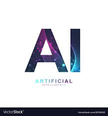
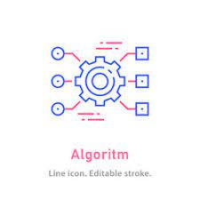
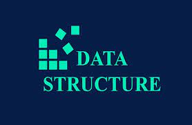
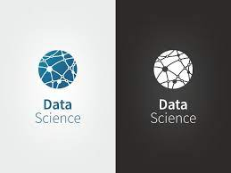
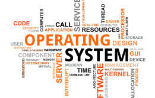

course details
artificial inteligence
What is artificial intelligence (AI)?
Artificial intelligence is the simulation of human intelligence processes by machines,especially computer systems. Specific applications of AI include expert systems,
natural language processing, speech recognition and machine vision.
How does AI work?
As the hype around AI has accelerated, vendors have been scrambling to promote
how their products and services use it. Often, what they refer to as AI is simply a
component of the technology, such as machine learning. AI requires a foundation of specialized
hardware and software for writing and training machine learning algorithms. No single programming
language is synonymous with AI, but Python, R, Java, C++ and Julia have features popular with AI developers.
In general, AI systems work by ingesting large amounts of labeled training data, analyzing the data
for correlations and patterns, and using these patterns to make predictions about future states.
In this way, a chatbot that is fed examples of text can learn to generate lifelike exchanges with people,
or an image recognition tool can learn to identify and describe objects in images by reviewing millions
of examples. New, rapidly improving generative AI techniques can create realistic text, images,
music and other media.
AI programming focuses on cognitive skills that include the following:
Learning. This aspect of AI programming focuses on acquiring data and creating rules for
how to turn it into actionable information. The rules, which are called algorithms,
provide computing devices with step-by-step instructions for how to complete a specific task.
Reasoning. This aspect of AI programming focuses on choosing the right algorithm to reach a desired outcome.
Self-correction. This aspect of AI programming is designed to continually fine-tune algorithms and ensure
they provide the most accurate results possible.
Creativity. This aspect of AI uses neural networks, rules-based systems, statistical methods and
other AI techniques to generate new images, new text, new music and new ideas Differences between AI,
machine learning and deep learning.

algorithms
What Is an Algorithm?
An algorithm is a set of instructions for solving a problem or accomplishing a task. One commonexample of an algorithm is a recipe, which consists of specific instructions for preparing a dish or meal.
Every computerized device uses algorithms to perform its functions in the form of hardware- or software-based routines.
In finance, algorithms have become important in developing automated and high-frequency trading (HFT) systems,
as well as in the pricing of sophisticated financial instruments like derivatives.
KEY TAKEAWAYS
An algorithm is a set of instructions for solving a problem or accomplishing a task.
Every computerized device uses algorithms, which cut the time required to do things manually.
Algorithmic trading, also known as automated trading or black-box trading, uses a computer program
to buy or sell securities at a pace not possible for humans.
Algorithmic trading accounts for over 60% of all trading volume in the global equities markets.
Algorithmic traders can analyze information faster than humans, allowing them to respond instantly
to minute price movements.Understanding Algorithms Financial companies use algorithms in areas
such as loan pricing, stock trading, asset-liability management, and many automated functions.
For example, algorithmic trading, known as algo trading, is used for deciding the timing, pricing,
and quantity of stock orders. Also referred to as automated trading or black-box trading, algo
trading uses computer programs to buy or sell securities at a pace not possible for humans.
A large part of stock trading in the U.S. is done using algorithms, and they are also used
widely in forex trading. A big part of that is high-frequency trading (HFT), often employed by hedge funds.
HFT involves using sophisticated computers and algorithms for trading. One side effect of algos is that the average
holding period for stocks has decreased significantly—from eight years in the 1950s to less than six months in 2020.
Computer algorithms make life easier by trimming the time it takes to manually do things. In the world of automation,
algorithms allow workers to be more proficient and focused. Algorithms make slow processes more proficient.
In many cases, especially in automation, algos can save companies money.

cascading style sheet
What is CSS?
Cascading Style Sheets (CSS) is a simple mechanism for adding style (e.g., fonts, colors, spacing) to Web documents.These pages contain information on how to learn and use CSS and on available software.
CSS is a rule-based language — you define the rules by specifying groups of styles that should be applied to particular
elements or groups of elements on your web page. In the above example, the CSS rule opens with a selector.
This selects the HTML element that we are going to style.
The CSS selectors module defines the patterns to select elements to which a set of CSS rules are then
applied along with their specificity . The CSS selectors module provides us with more than 60 selectors and
five combinators. Other modules provide additional pseudo-class selectors and pseudo-elements.
What is the basic syntax of CSS?
The selector points to the HTML element you want to style.
The declaration block contains one or more declarations separated by semicolons. Each declaration includes a
CSS property name and a value, separated by a colon.
What are the 2 main parts of a CSS syntax?
A CSS rule consists of two main parts: selector ('h1') and declaration ('color: red'). In HTML, element names
are case-insensitive so 'h1' works just as well as 'H1'. The declaration has two parts: property name ('color')
and property value ('red').
What is the structure of CSS?
How CSS is structured - Learn web development
At its most basic level, CSS consists of two components: Properties: These are human-readable
identifiers that indicate which stylistic features you want to modify.
For example, font-size , width , background-color . Values: Each property is assigned a value.
cyber security
What Is Cybersecurity?
Cybersecurity is the practice of protecting systems, networks, and programs from digital attacks.These cyberattacks are usually aimed at accessing, changing, or destroying sensitive information;
extorting money from users via ransomware; or interrupting normal business processes.
What are the 5 types of cyber security?
Types of Cybersecurity- 1.Critical infrastructure security
networks and assets whose continuous operation is deemed necessary to ensure the security of a
given nation, its economy, and the public's health and/or safety.
- 2.Application security
applications to prevent security vulnerabilities against threats such as unauthorized access and
modification.
- 3.Network security
It includes both hardware and software technologies. It targets a variety of threats. It stops them from
entering or spreading on your network. Effective network security manages access to the network.
- 4.Cloud security
protect cloud-based infrastructure, applications, and data. These measures ensure user and device authentication,
data and resource access control, and data privacy protection.
- 5.Internet of Things (IoT) security
Its primary goals are to maintain the privacy of users and confidentiality of data, ensure the security of
devices and other related infrastructures, and allow the IoT ecosystem to function smoothly.

data structure
what is data structure?
A data structure is a specialized format for organizing, processing, retrieving and storing data.There are several basic and advanced types of data structures, all designed to arrange data to suit a
specific purpose. Data structures make it easy for users to access and work with the data they need in appropriate ways.
What are the 4 types of data structures?
What Are Data Structures? (Definition, Types)
The four basic data structure types are linear data structures, tree data structures, hash data structures and graph data structures.
- 1.Linear Data Structures
connected to the previous and the next element. As the elements are stored sequentially,
so they can be traversed or accessed in a single run.
- 2.Tree Data Structures
It connects each node in the tree data structure using "edges”, both directed and undirected
- 3.Hash Tables
hash function to compute an index into an array in which an element will be inserted or searched.
- 4.Data Structures
There are several basic and advanced types of data structures,
all designed to arrange data to suit a specific purpose.

data science
what is data science?
Data science is the study of data to extract meaningful insights for business. It is a multidisciplinaryapproach that combines principles and practices from the fields of mathematics, statistics,
artificial intelligence, and computer engineering to analyze large amounts of data.
What is data science used for?
Data science is used to study data in four main ways:
1. Descriptive analysis
Descriptive analysis examines data to gain insights into what happened or what is happening in the data environment.
It is characterized by data visualizations such as pie charts, bar charts, line graphs, tables, or generated narratives.
For example, a flight booking service may record data like the number of tickets booked each day.
Descriptive analysis will reveal booking spikes, booking slumps, and high-performing months for this service.
2. Diagnostic analysis
Diagnostic analysis is a deep-dive or detailed data examination to understand why something happened.
It is characterized by techniques such as drill-down, data discovery, data mining, and correlations.
Multiple data operations and transformations may be performed on a given data set to discover
unique patterns in each of these techniques.For example, the flight service might drill down on a particularly
high-performing month to better understand the booking spike. This may lead to the discovery that many customers
visit a particular city to attend a monthly sporting event.
3. Predictive analysis
Predictive analysis uses historical data to make accurate forecasts about data patterns that may occur in the future.
It is characterized by techniques such as machine learning, forecasting, pattern matching, and predictive modeling.
In each of these techniques, computers are trained to reverse engineer causality connections in the data.For example,
the flight service team might use data science to predict flight booking patterns for the coming year at the start of each year.
The computer program or algorithm may look at past data and predict booking spikes for certain destinations in May.
Having anticipated their customer’s future travel requirements, the company could start targeted advertising from February.
4. Prescriptive analysis
Prescriptive analytics takes predictive data to the next level. It not only predicts what is likely to happen but also suggests
an optimum response to that outcome. It can analyze the potential implications of different choices and recommend the best course of action.
It uses graph analysis, simulation, complex event processing, neural networks, and recommendation engines from machine learning.
html
what is HTML?
HTML (HyperText Markup Language) is the code that is used to structure a web page and its content. For example, content could bestructured within a set of paragraphs, a list of bulleted points, or using images and data tables.
HTML is not a programming language. It's a markup language. In fact, that is the technology's name: HyperText Markup Language.
There are three categories of HTML: transitional, strict, and frameset. Transitional is the most common type of HTML while the strict
type of HTML is meant to return rules to HTML and make it more reliable. Frameset allows Web developers to create a mosaic
of HTML documents and a menu system.
The first version of HTML was written by Tim Berners-Lee in 1993. Since then, there have been many different versions of HTML.
The most widely used version throughout the 2000's was HTML 4.01, which became an official standard in December 1999. Another version,
XHTML, was a rewrite of HTML as an XML language.
What are the 4 basic HTML tags?
Basic HTML Tags There is a range of HTML tags, they help you to design your web page. There are four required tags in HTML.
These are html, title, head and body.

java
why use java?
The name JAVA is a computer-based programming language that functions to develop computer-based applications.It does not have a specific full form or neither an abbreviation. Hence, the 'Just Another Virtual Accelerator'
is a fictionalized complete version of JAVA and the name is put forward by the general public.
Tasks commonly performed with Java
A Java program may conation more than one class definition. We use the class keyword to define the class. The class is a
blueprint of a Java program. It contains information about user-defined methods, variables, and constants.
Every Java program has at least one class that contains the main() method.
Data Structure in java is defined as the collection of data pieces that offers an effective means of storing and
organising data in a computer. Linked List, Stack, Queue, and arrays are a few examples of java data structures.
java script
What is HTML used for?
Structuring web pages. With tags and elements, we can define the headings, paragraphs, and other contents of a web page.JavaScript is a programming language that adds interactivity to your website. This happens in games, in the
behavior of responses when buttons are pressed or with data entry on forms; with dynamic styling; with animation, etc.
It is one of the most versatile languages for building rich and dynamic websites. JavaScript is typically used for
front-end web development, but it can also be used for backend development.
JavaScript was invented by Brendan Eich in 1995. It was developed for Netscape 2, and became the ECMA-262 standard in 1997.
After Netscape handed JavaScript over to ECMA, the Mozilla foundation continued to develop JavaScript for the Firefox browser.
In order to start coding in JavaScript the next step is to open up the actual place where we will write and execute the code
inside the Chrome browser. From the top menu, Go to: Menu, then Developer, and then click on JavaScript Console. You can also
use the shortcut for Mac, which is “option + command + J”.

operating system
types of operating system.
manages all of the other application programs in a computer. The application programs make use of the
operating system by making requests for services through a defined application program interface (API).
The following are the two types of Operating System along with their examples.
Single-User Operating System for example, DOS, Windows 95/97.
Multi-User Operating System for example, UNIX, LINUX
What is an Operating System Used for?
The operating system helps in improving the computer software as well as hardware. Without OS, it became very
difficult for any application to be user-friendly. The Operating System provides a user with an interface that
makes any application attractive and user-friendly. The operating System comes with a large number of device
drivers that make OS services reachable to the hardware environment. Each and every application present in the
system requires the Operating System. The operating system works as a communication channel between
system hardware and system software. The operating system helps an application with the hardware part without
knowing about the actual hardware configuration. It is one of the most important parts of the system and hence
it is present in every device, whether large or small device
computer system more convenient to use in an efficient manner.
interactive with a more convenient interface for the users.
resources by acting as an intermediary between the hardware and its users.
computer in a better and faster way.
granting resource requests, and mediating conflicting requests from different programs and users.
between the users and programs.

python
why use phython?
Python is commonly used for developing websites and software, task automation, data analysis, and data visualisation.Since it's relatively easy to learn, Python has been adopted by many non-programmers, such as accountants and
scientists, for a variety of everyday tasks, like organising finances.
Python is a dynamic, interpreted (bytecode-compiled) language. There are no type declarations of variables, parameters,
functions, or methods in source code. This makes the code short and flexible, and you lose the compile-time type
checking of the source code.
Python is a popular language for web and software development because you can create complex, multi-protocol
applications while maintaining concise, readable syntax. In fact, some of the most popular applications were built with Python
functions, or methods in source code. This makes the code short and flexible, and you lose the compile-time type
checking of the source code.
Some examples of well-known companies that require Developers and Data Specialists to work with Python are Uber,
Goldman Sachs, PayPal, Netflix, and Google.
What can Python do?

ui/ux design
what is ui/ux design?
The UI/UX Design Specialization brings a design-centric approach to user interface and user experience design,offers practical, skill-based instruction centered around a visual communications perspective, rather than on
one focused on marketing or programming alone.
The answer is no. UI/UX design is one among numerous non-technical roles in tech that doesn't require any
coding or programming skills. However, having previous experience in coding or programming skills is beneficial as
communicating with developers is made easier.
HTML defines the structure and content of the web page, CSS controls the layout and style, and JavaScript adds
interactivity and logic. You can use various libraries and frameworks based on these technologies to enhance your
UI and UX design, such as Bootstrap, jQuery, React, Angular, and Vue.
Learn about the differences between UI and UX (and which might be a better career for you).
User interface (UI) and user experience (UX) are two words that you might hear mentioned
frequently in tech circles (and sometimes interchangeably).
UX design stands for user experience design, while UI design stands for user interface design.
Both are important facets of the custom software development process, and both involve working
closely with users to create interfaces that are both effective and easy to use.
Designing the user interface (UI) and the user experience (UX) has grown in importance in creating new products.
In addition, the requirement for user-centered, intuitive, and seamless designs has increased in importance as
technology continues to evolve rapidly. In short, the future of UI/UX designer is quite bright.
UX design focuses on creating a seamless and meaningful user experience by understanding user needs,
conducting research, and designing intuitive interfaces, while UI design focuses on the visual,
interactive elements of a product to create aesthetically-pleasing interfaces.
UI UX designers create the user interface for an app, website, or other interactive media.
Their work includes collaborating with product managers and engineers to gather requirements
from users before designing ideas that can be communicated using storyboards.